Now booking Studio / Photography Sony A7RV · digitals $100
Taylormade Creative is a Dallas–Fort Worth studio that shoots headshots, branding photoshoots, and product photography — directed and photographed in-house on the Sony A7RV. Need clean digitals today? $100 flat, booked online in about a minute.
Clean, natural, straight-to-camera digitals — the standard for casting, comp cards, and agency submissions. No frills, no wait: pick a time slot, pay online, show up, done.
Directed portraits for executives, actors, realtors, and founders — lit and framed so the person hiring you takes you seriously before you say a word.
A full visual library for your brand — you, your work, your space — art-directed so your website, socials, and press kit all pull from one coherent world.
Campaign-grade product imagery — studio-lit, styled, and retouched to make your product read like it belongs on a national shelf, because it should.
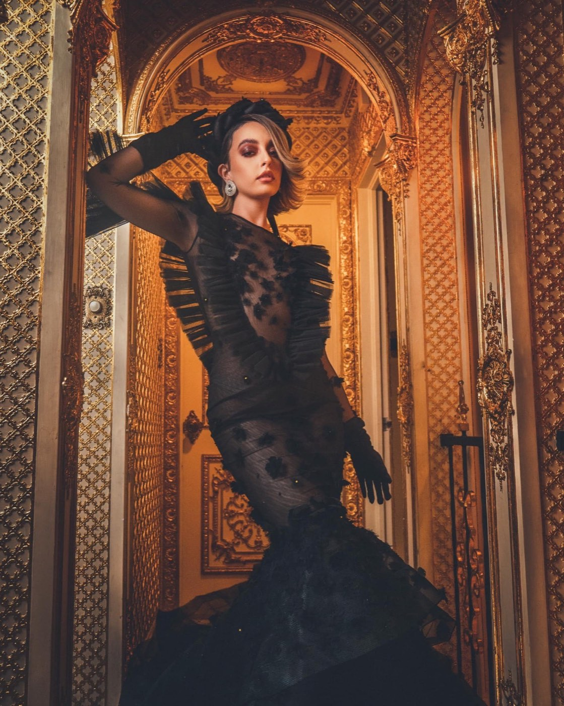
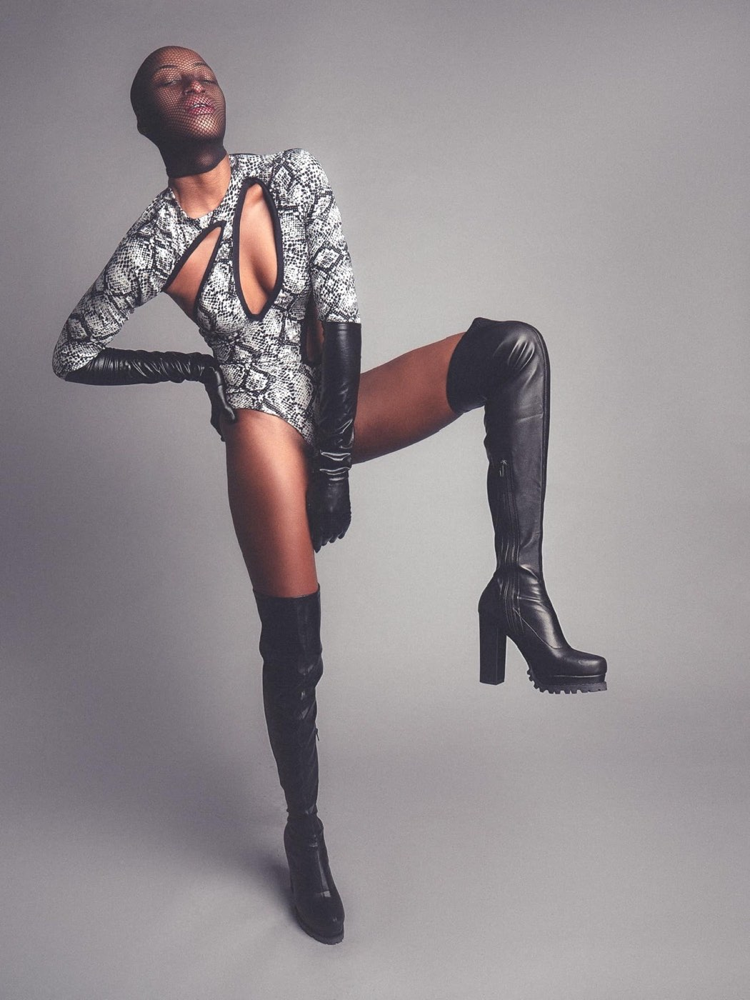
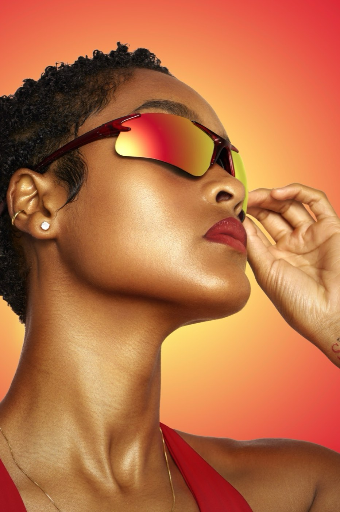
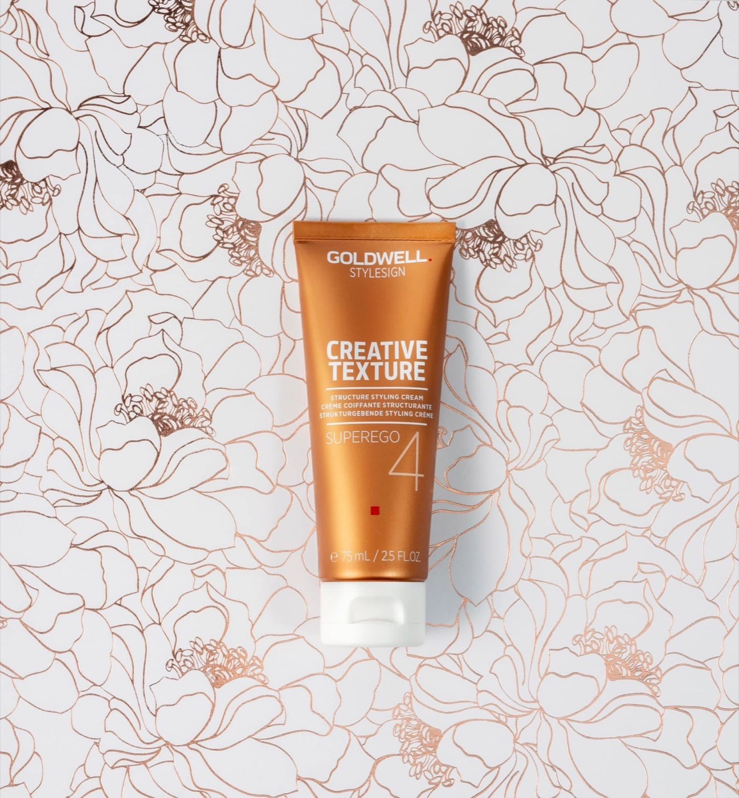
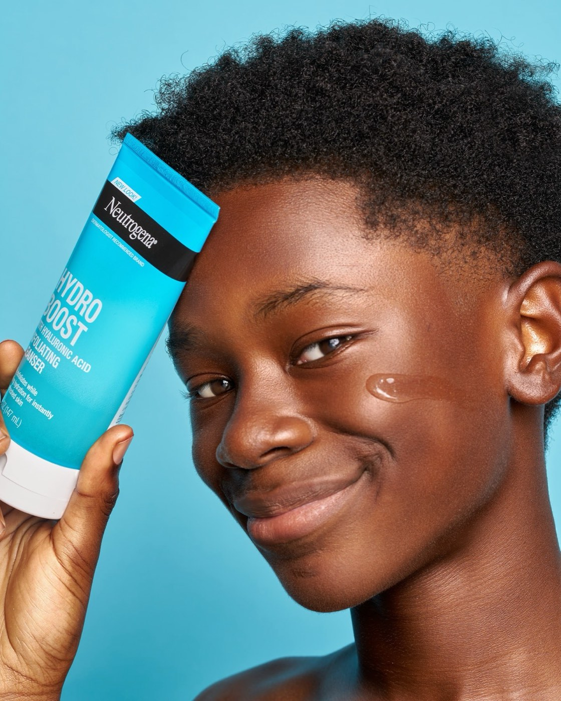
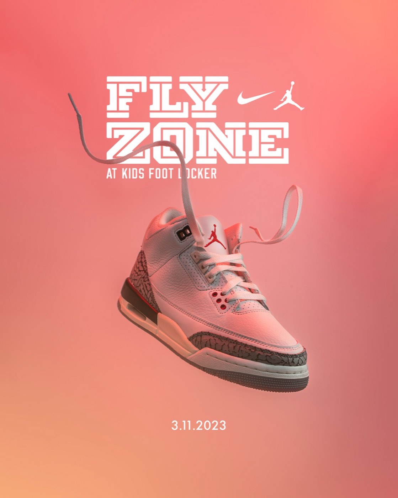
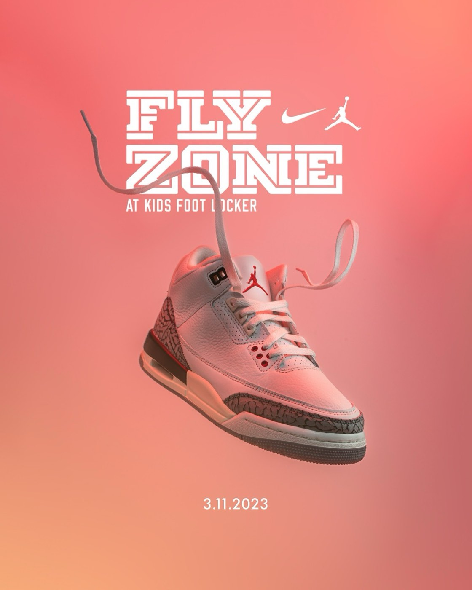
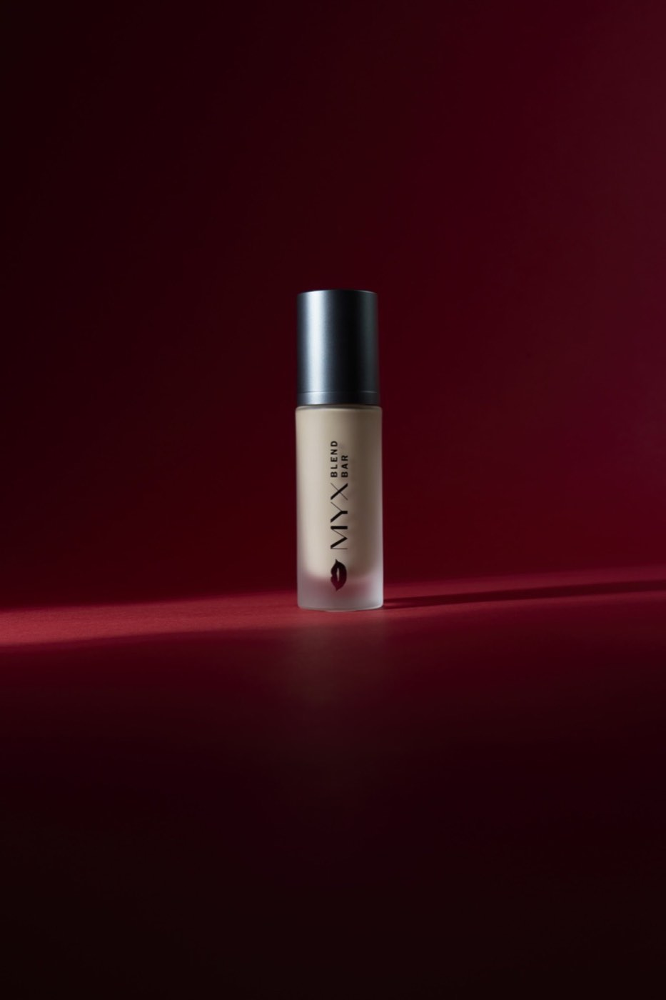
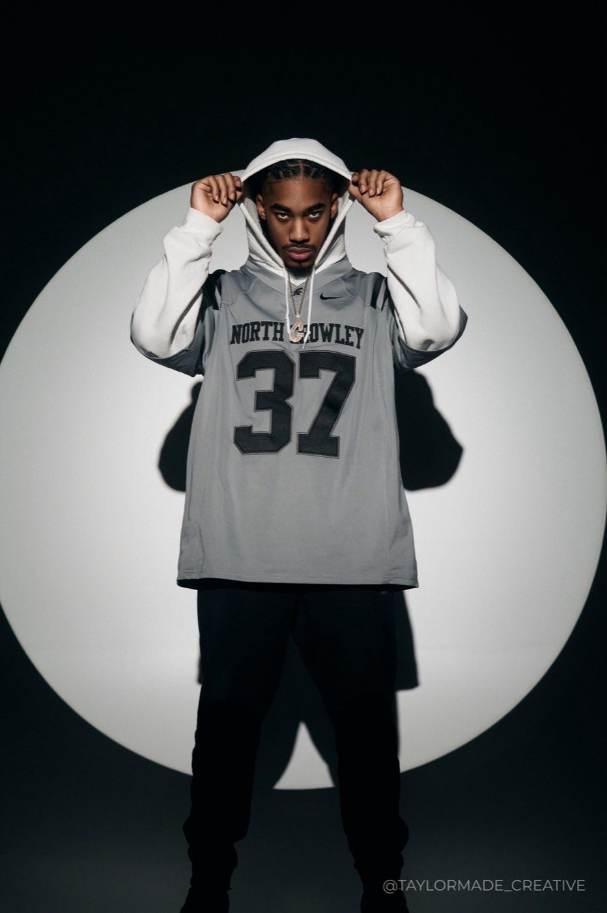
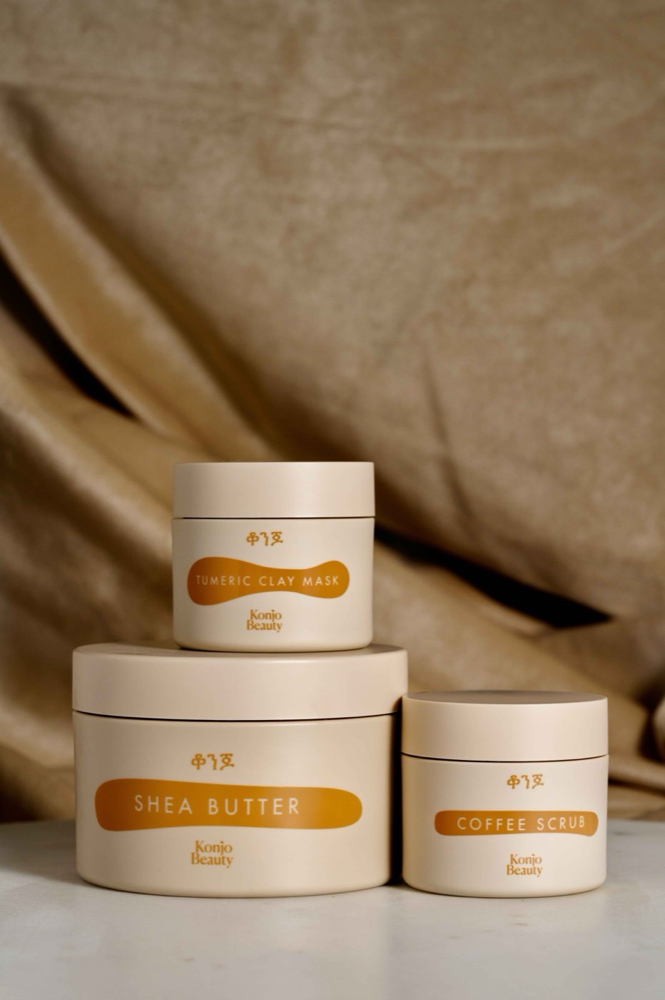
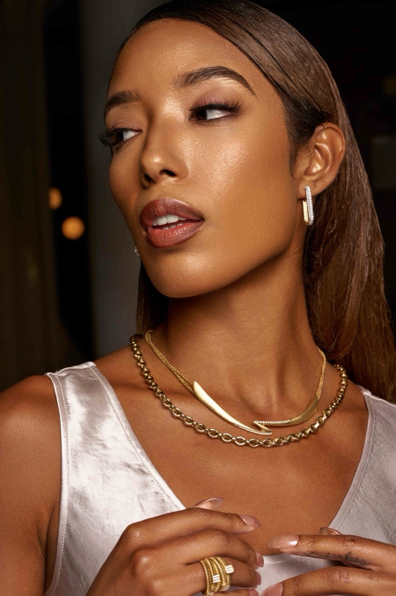
Pick a live time slot and pay with secure payment by Stripe — confirmation lands in your inbox automatically. Custom sessions get a quote within one business day, and a 50% deposit locks the date.
A few days before the shoot you get a prep email — wardrobe, timing, what to bring — plus a reminder the day before. Zero guesswork.
Directed and shot on the Sony A7RV — in studio or on location across DFW. You're posed, lit, and talked through every frame.
A proofing gallery goes live in your private client portal. You pick your favorites, I edit the selects, and finals land in about two weeks with two rounds of edits included.
Digitals are $100 flat and book instantly online. Headshots, branding photoshoots, and product photography are quoted per project because scope drives cost — send an inquiry and I reply within one business day with a real number. A 50% deposit locks your date.
Your prep email covers it a few days before the shoot. The short version: solid colors photograph best, and bringing 2–3 options gives us range to work with.
After the shoot, a proofing gallery goes live in your private client portal. You select your favorites and those selects get the full edit. Final counts depend on the session — it's set in your quote, not a one-size template.
Edited finals are delivered in your client portal in about two weeks, with two rounds of edits included.
Both. I shoot in studio or on location — your space, a venue, or the streets of DFW. Based in Dallas–Fort Worth, shoots everywhere; travel gets scoped into your quote.
Pick a live time slot, pay online, and your confirmation hits your inbox before you close the tab. Casting-ready digitals, zero back-and-forth.